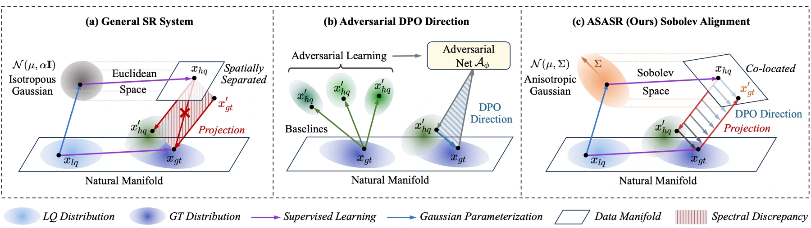
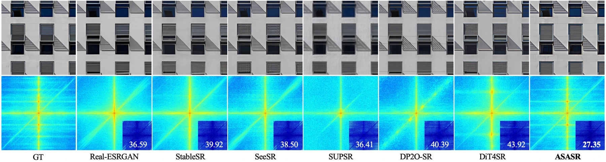

Generative super-resolution can produce compelling details that do not belong to the source image. This work studies a spectral mismatch: objectives built around isotropic noise do not reflect the frequency structure of natural images.
生成式超分辨率可能产生看似可信、却并不属于原图的细节。该研究关注频谱上的不匹配：基于各向同性噪声的目标，无法充分反映自然图像的频率结构。
The aim is not simply to make an image sharper. It is to make the optimization distinguish between detail supported by the image and detail that only looks plausible.
目标不只是让图像更锐利，而是让优化过程区分由图像支持的细节与仅仅看似合理的细节。
Making alignment sensitive to frequency让对齐感知频率结构
ASASR colors the noise transition kernel to follow natural spectral decay, expressing the generative flow in a Sobolev-induced geometry. A learned adversary then creates targeted negative examples corresponding to structural failure directions. Together, these components make alignment sensitive to the kinds of detail that should be preserved or discouraged.
ASASR 对噪声转移核进行着色，使其遵循自然频谱衰减，并在 Sobolev 诱导的几何空间中描述生成流。可学习的对抗模块产生针对结构失真方向的负样本，让优化过程更关注应当保留或抑制的细节。
The frequency perspective explains why a visually small error may still be structurally important. Natural images distribute information unevenly across scales; treating every direction in image space identically can penalize or reward the wrong changes. Sobolev geometry makes this structure part of the optimization. The adversary adds a second ingredient by generating plausible failures, giving the alignment process a sharper distinction between convincing texture and the structure it should actually preserve.
频率视角解释了为什么视觉上很小的误差仍可能影响结构。自然图像的信息分布并不均匀，把图像空间中所有方向一视同仁，可能惩罚或鼓励错误的变化。Sobolev 几何将这种结构纳入优化，而对抗过程进一步生成看似合理的失败样本，帮助区分逼真纹理与应当保留的真实结构。
{kind=link}

Testing structure as well as appearance同时检验结构与观感
The evaluation checks three complementary questions: whether images look natural, whether their frequency content matches the reference, and whether useful semantic information survives restoration. The paper combines perceptual comparisons with spectral analysis, a user study and downstream detection, segmentation and OCR. Ablations replace Sobolev guidance with Euclidean guidance and remove adversarial alignment, testing whether the proposed geometry and negative examples each contribute.
评测从三个互补角度展开：图像是否自然、频率结构是否接近参考，以及恢复后是否保留有效语义。论文结合感知指标、频谱分析、用户研究及检测、分割、OCR 任务，并用欧氏引导替换 Sobolev 引导、移除对抗对齐，分别验证几何设计与负样本的贡献。
What the evidence says about fidelity保真度的实验证据
In a study with 50 participants and 64 test images, ASASR receives a 91.1% first-choice rate for naturalness and fidelity. Frequency-domain comparisons and downstream detection, segmentation and OCR experiments support improved structural preservation. These are results under the paper’s degradation and evaluation settings, rather than a guarantee for arbitrary inputs.
在 50 名参与者、64 张测试图像的用户研究中，ASASR 在自然度与保真度评价中获得 91.1% 的首选率。频域对比及检测、分割、OCR 实验也支持其结构保真能力。结论对应论文的退化与评测设置，并不意味着任意输入都有同样效果。
{kind=link}

Detail is only useful when it belongs细节需要忠于输入
The distinction between a detailed image and a faithful image is the central takeaway. A generative model can improve appearance while changing structure, so a restoration objective needs more than a preference for sharpness. The evidence supports this frequency-aware formulation in the tested settings; perceptual scores and task performance remain complementary checks rather than interchangeable measures.
细节丰富与忠于输入并不是同一回事。生成模型可能改善观感，却改变结构，因此恢复目标不能只偏好锐利纹理。实验支持了频率感知设计在所测设置中的价值，而感知指标和下游任务仍需互补使用，不能互相替代。
Paper & authors论文与作者
Coloring the Noise: Adversarial Sobolev Alignment for Faithful Image Super Resolution ↗
Cite this work
@misc{wang2026coloringnoiseadversarialsobolev,
title = {Coloring the Noise: Adversarial Sobolev Alignment for Faithful Image Super
Resolution},
author = {Hongbo Wang
and Huaibo Huang
and Pin Wang
and Jinhua Hao
and Chao Zhou
and Ran He},
year = {2026},
eprint = {2605.23264},
archivePrefix = {arXiv},
primaryClass = {cs.CV},
url = {https://arxiv.org/abs/2605.23264}
}